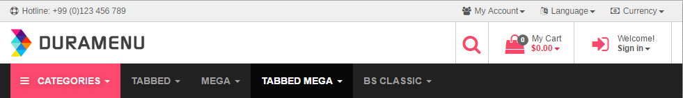
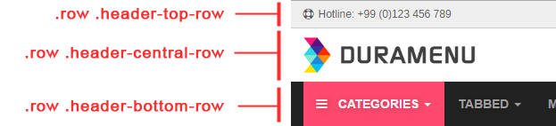

Duramenu v1.0 - Documentation
Requirements:
- Bootstrap 3.3.6
- jQuery 2.2.0
1.General
1.1 Easy Usage
The easiest way to use Duramenu is to use premade html files that comes with the package
Select an html file that fits to you. If you want to use a boxed version, then use html file named with "demo-boxed-...html", for example
Here is a list of html files in the package with their descriptions
- demo-boxed.html
- demo-boxed-without-demo-content.html
- demo-boxed-without-demo-content-all-empty
- demo-boxed-without-demo-content-color-aqua.html
- demo-boxed-without-demo-content-color-blue.html
- demo-boxed-without-demo-content-color-gray.html
- demo-boxed-without-demo-content-color-green.html
- demo-boxed-without-demo-content-color-green-light.html
- demo-boxed-without-demo-content-color-navy.html
- demo-boxed-without-demo-content-color-orange.html
- demo-boxed-without-demo-content-color-orange-dark.html
- demo-boxed-without-demo-content-color-purple.html
- demo-boxed-without-demo-content-color-yellow.html
Duramenu with its all content as seen in the live preview you have seen before you purchased it
Menu contents exists like in the demo live preview. But advertorial content, demo settings bar, etc. removed
All content, including the submenu contents are removed. With this file, you can easily understand the code structure (few lines of code), but itmight be difficult to fill the menu contents by your own. However, we placed notifications like "YOUR CONTENT#1 GOES" inside menus
Color option: Aqua --> Menu contents exists, like in the demo live preview
Color option: Blue --> Menu contents exists, like in the demo live preview
Color option: Gray --> Menu contents exists, like in the demo live preview
Color option: Green --> Menu contents exists, like in the demo live preview
Color option: Green Light --> Menu contents exists, like in the demo live preview
Color option: Navy --> Menu contents exists, like in the demo live preview
Color option: Orange --> Menu contents exists, like in the demo live preview
Color option: Orange Dark --> Menu contents exists, like in the demo live preview
Color option: Purple --> Menu contents exists, like in the demo live preview
Color option: Yellow --> Menu contents exists, like in the demo live preview
Same logic applies for the fullwidth version
1.2 Files to Include
Between <head></head>:
<link href="css/bootstrap.min.css" rel="stylesheet">
<link href="css/dura-main.css" rel="stylesheet">
<link href="css/dura-responsive.css" rel="stylesheet">
<link href="css/font-awesome.min.css" rel="stylesheet">
<link href="css/font-arimo.css" rel="stylesheet">
<link href="css/font-notosans.css" rel="stylesheet">
<link href='https://fonts.googleapis.com/css?family=Khula:400,300' rel='stylesheet' type='text/css'>
Just before </body>
<script src="https://code.jquery.com/jquery-2.2.0.min.js" type="text/javascript"></script>
<script src="js/bootstrap.min.js"></script>
<script src="js/dura-main.js"></script>
2.Layout
Duramenu, as you already know, a menu (navigation) based on Bootstrap 3.3.x. Therefore, both the navigation and its content are based on Bootstrap classes
Duramenu is placed inside a .container
And it consists of 3 basic navigation levels, which are placed inside .rows, as can be seen below
2.1 .header-top-row menus
If you want to use a dropdown inside .header-top-row, the following structure has to be used
<li><a href="#" class="dropdown-toggle" data-toggle="dropdown" aria-haspopup="true" aria-expanded="false">
<i class="fa fa-users font-size-16" aria-hidden="true"></i>
<span class="margin-left-5 hidden-xs">My Account</span><span class="caret"></span></a>
<ul class="dropdown-menu">
<li><a href="#">Profile</a></li>
<li><a href="#">My Wishlist</a></li>
<li><a href="#">My Cart</a></li>
<li><a href="#">Logout</a></li>
</ul>
</li>The same structure as Bootstrap. Nothing specific.
2.2 .header-central-row menus
If you want to use a dropdown inside .header-central-row, the following structure has to be used
<li>
<a href="#" class="dropdown-toggle" data-toggle="dropdown" aria-haspopup="true" aria-expanded="false">
<span class="dropdown-text hidden-xs">My Cart</span>
<i class="fa fa-shopping-bag fa-fw font-size-28" aria-hidden="true"></i>
<span class="badge badge-item-count">0</span>
<span class="margin-left-5 text-bold-c hidden-xs">$0.00<span class="caret"></span></span>
</a>
<div class="dropdown-menu dropdown-central">
<div class="container">
<div class="row">
<div class="col-lg-12">
Your cart is empty
</div>
</div>
</div>
</div>
</li>As it can be seen, it is almost the same as a Bootstrap dropdown. The difference is, you have to add .dropdown-central class in addition to Bootstrap's .dropdown-menu
2.3 .header-bottom-row menus (main navigation)
Bootstrap navigation basics also appy here. Here is a main basic Bootstrap navigation structure that is used in Duramenu
2.3.1 Basic Navigation
<nav class="navbar navbar-inverse navbar-static-top">
<div class="container-fluid">
<!-- Brand and toggle get grouped for better mobile display -->
<div class="navbar-header">
<button type="button" class="navbar-toggle collapsed" data-toggle="collapse" data-target="#bs-example-navbar-collapse-1" aria-expanded="false">
<span class="sr-only">Toggle navigation</span>
<span class="icon-bar"></span>
<span class="icon-bar"></span>
<span class="icon-bar"></span>
</button>
</div>
<div class="collapse navbar-collapse">
<ul class="nav navbar-nav">
<!-- menu item with dropdown -->
<li class="dropdown active-shopping">
<a href="#" class="dropdown-toggle" data-toggle="dropdown" role="button" aria-haspopup="true" aria-expanded="false">
<i class="fa fa-bars" aria-hidden="true"></i>Dropdown <span class="caret"></span>
</a>
<ul class="dropdown-menu">
<li><a href="#"><i class="fa fa-female" aria-hidden="true"></i>Menu Item 1</a></li>
<li><a href="#"><i class="fa fa-female" aria-hidden="true"></i>Menu Item 2</a></li>
<li><a href="#"><i class="fa fa-female" aria-hidden="true"></i>Menu Item 3</a></li>
<li><a href="#"><i class="fa fa-female" aria-hidden="true"></i>Menu Item 4</a></li>
</ul>
</li>
<!-- menu item without dropdown -->
<li>
<a href="#" class="dropdown-toggle" data-toggle="dropdown" role="button" aria-haspopup="true" aria-expanded="false">
Dropdown <span class="caret"></span>
</a>
</li>
...
...
...
</ul>
</div>
</div>
</nav>
2.3.2 Basic Navigation - Mega Menu Structure
<!-- MEGA MENU CLASSIC -->
<li class="dropdown dropdown-mega">
<a href="#" class="dropdown-toggle" data-toggle="dropdown" role="button" aria-haspopup="true" aria-expanded="false">Mega <span class="caret"></span></a>
<div class="dropdown-menu dropdown-mega-content">
<div class="row" style="padding: 20px;">
<div class="col-lg-12 col-md-12 col-sm-12 col-xs-12">
Your Dropdown Mega Content Goes
</div>
</div>
</div>
</li>
<!-- /MEGA MENU CLASSIC -->
2.3.2 Basic Navigation - Tabbed Menu Structure
<!-- TABBED MENU - CUSTOM WIDTH -->
<li class="custom-mega">
<a href="#" class="dropdown-toggle" data-toggle="dropdown" role="button" aria-haspopup="true" aria-expanded="false">Tabbed <span class="caret"></span></a>
<div class="dropdown-menu tabbed-menu tabbed-height-365">
<ul>
<li><a href="#" class="active-tab">Tabbed 1</a>
<div class="tabbed-menu-content active-tab-content container">
<div class="row">
<div class="col-lg-12">
Your content#1 goes
</div>
</div>
</div>
</li>
<li><a href="#">Tabbed 2</a>
<div class="tabbed-menu-content container">
<div class="row">
<div class="col-lg-12">
Your content#2 goes
</div>
</div>
</div>
</li>
...
...
</ul>
</div>
</li>
<!-- TABBED MENU - CUSTOM WIDTH -->Above is the main structure of the tabbed menu. You shouldn't omit any of the classes. Rest is simple
++++++++++++++++++++++++++++++++++++++++++++++++++++++++++++++++++
However, there is one thing that has to be mentioned:
If you want to use, TABBED MENU or TABBED MEGA MENU, for each li item, you have to specify and assign a class for height value. For example, in above example, there is a class named .tabbed-height-365. This class specifies the height of the tabbed menu content. For your examples you should create your own custom class. For example, if you want tabbed mega menu height of 600px, create this:
.tabbed-height-600 {
height: 600px;
}..
<div class="dropdown-menu tabbed-menu tabbed-height-600">
..++++++++++++++++++++++++++++++++++++++++++++++++++++++++++++++++++
2.3.2 Basic Navigation - Tabbed Mega Menu Structure
It is almost the same as TABBED MENU structure
The only difference:
Instead of .custom-mega class, .tabbed-mega is used
In addition to .tabbed-menu, one more class has to be added .tabbed-mega-menu
3. Others
3.1 Changing the Logo
In img/ folder, you can see logo under logo.png
Simply change this .png file with yours
3.2 Responsive Features
Basic responsive features already comes with Bootstrap
However, for custom changes, you can find media queries inside dura-responsive.css inside css/ folder
3.3 Icons - FontAwesome
In duramenu we have used fontawesome icons. Basic usage:
<i class="fa fa-home" aria-hidden="true"></i>
Too see the full list of icons, please visit FontAwesome
Need Support?
For additional questions, do not hesitate to ask: Email Us
Or:Codecanyon profile: Brienlabs